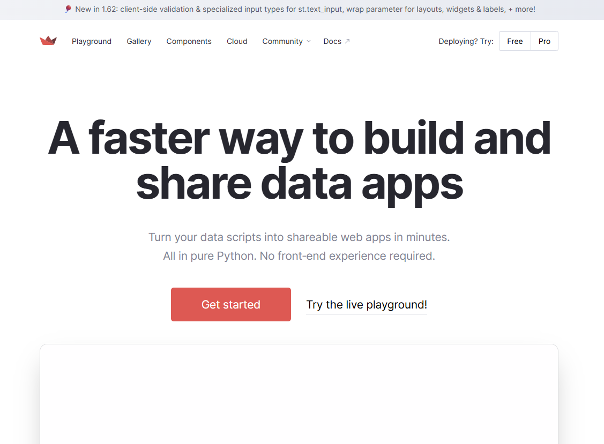
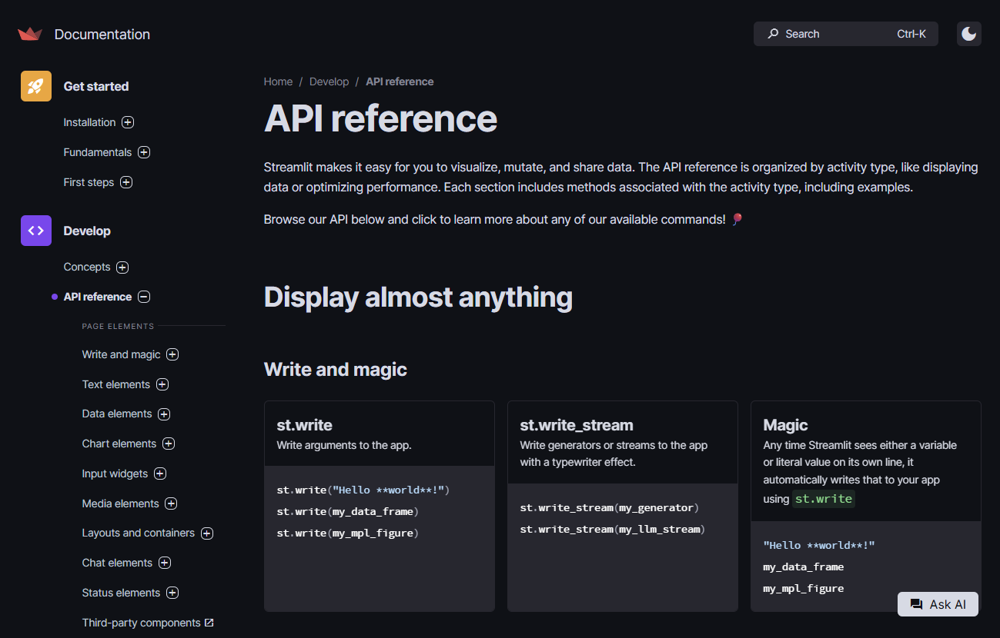
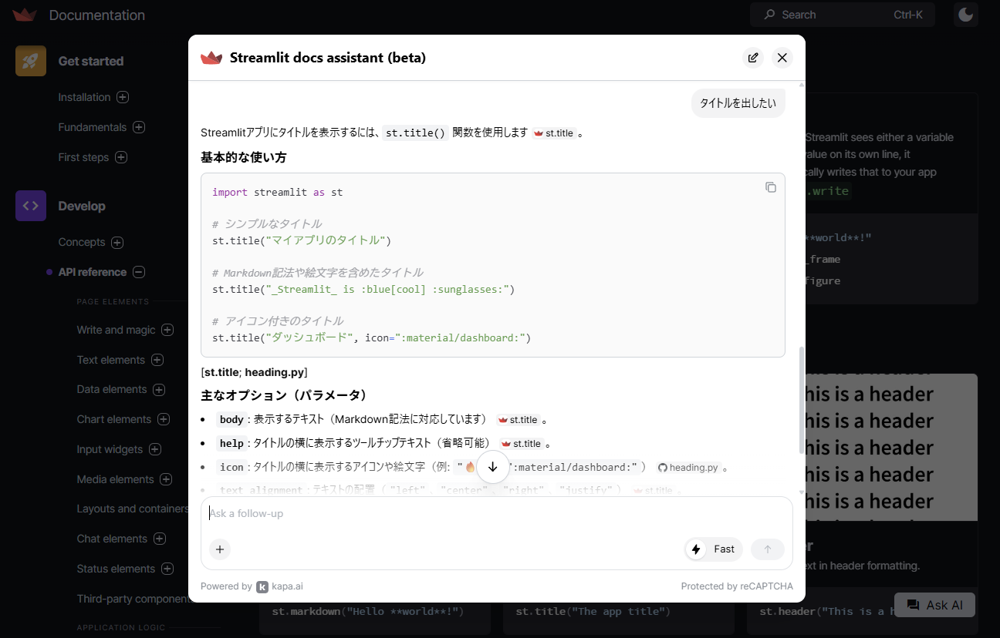
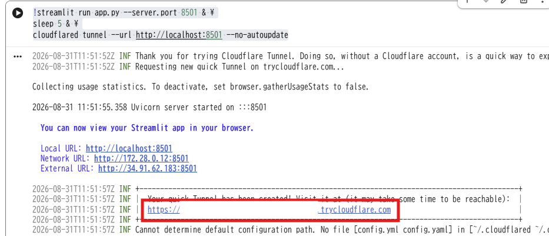

第5回 Webサービスの活用1¶
PythonでWebアプリケーションを構築できるStreamlitによるWebアプリ開発の基礎です
🎯 到達目標¶
データのWebアプリ化（ダッシュボード化）の目的と意義（なぜデータを静止画やExcelではなく、アプリとして公開するのか）をビジネスや社会の視点から説明できる。
Google Colab上でStreamlitを安全に起動し、ローカルトンネルの仕組みを用いて、スマートフォンや外部ブラウザからアクセス可能な公開URLを発行できる。
Streamlitの基本出力コマンド（タイトル、見出し、テキスト、マークダウン）を使い分けて、Web画面のレイアウトを美しく構成できる。
様々な入力部品（ウィジェット）（ボタン、スライダー、セレクトボックス、チェックボックス、テキスト入力）を自由自在に配置できる。
Streamlit特有の動作システム「Rerun（再実行）」と「st.buttonの消える罠」の仕組みをロジカルに説明し、バグのない対話型（インタラクティブ）アプリを設計できる。
練習問題のGoogle Colab起動¶

上記の「Open In Colab」をクリックして、Google Colabを起動させてください
[ファイル] → [ドライブにコピーを保存] を選択して、Googleドライブにコピーを保存してください
保存が成功すると，Googleドライブの「マイドライブ」 →「Colab Notebooks」にコピーしたファイルが保存されます。
GoogleドライブにコピーしたGoogle ColabのNotebooksを開いてください
開いたGoogle ColabのNotebooksで作業をしてください
「Webアプリ」でダッシュボード化¶
Streamlit¶
Streamlitは、データ分析や機械学習のスクリプトを、わずか数行のPythonコードでインタラクティブなWebアプリケーションに変換できるオープンソースのPythonライブラリです。
streamlit公式ページ
{kind=link}

streamlit公式ドキュメント
{kind=link}

streamlit公式ドキュメント（チャット画面）
{kind=link}

Streamlitの画面を外部からアクセス可能にする¶
データを収集し、Pandasで集計し、Matplotlibでグラフを描くことができるようになりました。 しかし、その分析結果を他の人に見せたいとき、どう共有すればよいのか?
「Pythonのコードと、グラフの画像ファイルをメールで送る」
問題点：相手はPythonを実行できません。また、画像は「静止画」なので、相手が「特定の店舗だけ」「特定の年代だけ」に絞り込んだデータを見たいと思っても、拡大したり、条件を変えることができません。
「Excelファイルを共有する」
問題点：共有された相手が誤って関数や数式を壊して（消して）しまったり、スマートフォンからだと画面が崩れて操作しづらかったりします。
解決策として「誰でもスマホやパソコンのブラウザからアクセスして、ボタン一つでデータを絞り込める『Webアプリケーション』にすることです。
このようにデータと操作盤が合体した画面を持つなWebデータとアプリケーションを「ダッシュボード」と呼びます。
【ダッシュボードの開発イメージ】
▼ 昔の開発方法（学習コスト：大）
Python(分析) ＋ HTML/CSS(画面デザイン) ＋ JavaScript(動き) ＋ サーバー構築
➡ 覚えることが多すぎて、画面を作る前に挫折してしまいます。
▼ Streamlitを使った開発（学習コスト：小 ）
[ Pythonコード数行 ] ──▶ [ Streamlitが自動変換 ] ──▶ [ Webアプリ ]
➡ HTMLもサーバーの知識も不要！いつものPythonコードでアプリが作成できます。
Google ColabでるWebアプリのトンネリング技術¶
通常、Streamlitは手元のパソコン（ローカル環境）のターミナル（黒い画面）から起動します。 今回は、インストールの手間がない Google Colab を利用してStreamlitを起動します。
ここで1つ、ネットワーク上の重大な問題が発生します。 Google Colabは、「Googleが管理する、インターネットの向こう側（クラウド）にある仮想パソコン」です。 Colabの中で「Webアプリ（Streamlit）」を起動しても、そのアプリはクラウドの中にあるため、 手元にあるパソコンのブラウザ（Google Chromeなど）から、インターネット経由して覗きに行くことができません。
【Colabと手元のブラウザの距離（イメージ図）】
[ 💻 あなたのパソコン ] [ 🏛️ Google Colab（クラウド） ]
┌───────────────────┐ ┌────────────────────────────┐
│ Chromeブラウザ │ ──(見に行けない)──▶ │ Streamlit起動！ │
│ (手元) │ ⚠️ 壁（ファイアウォール） │ (ポート: 8501) │
└───────────────────┘ └────────────────────────────┘
この「壁」を突破し、一時的に外からアプリにアクセスするための安全な通路（トンネル）を作る必要があります． これはトネリングという技術を使います．
[ 手元のブラウザ ] ──▶ [ https://xxxx.xxxx.xx (トンネルURL) ] ──▶ [ Colabの8501番窓口 ] ──▶ [ アプリ画面 ]
Google Colab上でStreamlitアプリケーションを実行してブラウザで表示するには、ローカルポートを外部に公開するトンネリングツール（localtunnel や ngrok）を使用するのが簡単です。今回は「Cloudflare Tunnel」というツールを使ってトネリングをします。 「Cloudflare Tunnel」は、自宅などで稼働しているホストサーバーを，セキュアに保護されたトンネルを構築して，安全に外部からアクセスする仕組みを構築します。
🌐 Cloudflare Tunnel を使ったトネリング概念図
┌────────────────────────────────────────────────────────┐
│ 💻 手元のPCブラウザ / スマートフォン │
└──────────────────────────┬─────────────────────────────┘
│
│ ① 一時的な公開URLにアクセス
│ (例: https://coffee-predictions.trycloudflare.com)
▼
┌────────────────────────────────────────────────────────┐
│ ☁️ Cloudflare エッジサーバー（世界規模の強力なネットワーク）│
└──────────────────────────▲─────────────────────────────┘
│
│ 🔏 ② 内側から外側への「暗号化された安全なトンネル」
│ (Outbound Connection により、Googleの壁を突破)
│
┌──────────────────────────┴─────────────────────────────┐
│ 🏛️ Google Colab（クラウド上の仮想パソコン） │
│ │
│ ┌──────────────────────────────────────────────────┐ │
│ │ 🚇 cloudflared プロセス（トンネルを掘る役割） │ │
│ └────────────────────────▲─────────────────────────┘ │
│ │ │
│ │ ③ 内部での通信転送 │
│ ┌────────────────────────┴─────────────────────────┐ │
│ │ ☕ Streamlit アプリ（Port: 8501 で待機中） │ │
│ └──────────────────────────────────────────────────┘ │
└────────────────────────────────────────────────────────┘
データが繋がる4つのステップ¶
アプリの起動
Google Colab内でStreamlitアプリが起動し、仮想マシン内のプライベートな出口（ポート8501番）で待機します。
安全なトンネルの開通
Colab上でCloudflare公式の接続ツールである cloudflared を実行します。cloudflared は、Colabの「内側から外側に向けて」Cloudflareの巨大なクラウドサーバー群に接続を張り、暗号化された1本パイプ（トンネル）を確立します。
一時的な公開ドメインの生成
トンネルが開通すると、Cloudflareから https://xxx-xxx-xxx.trycloudflare.com という、世界中からアクセス可能な一時的なURLが自動的に発行されます。
安全なアプリ閲覧
手元のパソコンやスマホのブラウザでこのURLを開くと、アクセスはCloudflareを経由し、事前につなぎっぱなしにされている「暗号化トンネル」のパイプをシュッと通り抜けて、Colab内のStreamlitアプリへと直接かつ高速に届けられます。
実践ハンズオン：Hello Worldアプリの起動¶
それでは、実際に手を動かして、あなた専用の最初のWebアプリをインターネットに誕生させて公開させます 以下の「3ステップ」を順番に実行していきます。
ステップ 1: 必要なライブラリのインストール¶
Streamlitインストール¶
Colabのセルに以下のコマンドを入力して実行し、StreamlitをColabの仮想パソコンにインストールします。
※コマンドの先頭についている「!」は、PythonではなくColabのシステムに命令を下すおまじないです。
Streamlitインストール（1回実行すればOKです）
!pip install -q streamlit
Cloudflare Tunnelインストール¶
Cloudflare TunnelをColabの仮想パソコンにインストールします。
cloudflaredインストール（1回実行すればOKです）
!wget https://github.com/cloudflare/cloudflared/releases/latest/download/cloudflared-linux-amd64.deb
!dpkg -i cloudflared-linux-amd64.deb
手順A: アプリのソースコードを作成¶
Colabは通常、セル単位でプログラムを実行しますが、Webアプリを起動するためには、プログラムを「1つの独立したファイル（app.py）」として保存する必要があります。
セルの1行目に %%writefile app.py と書くと、そのセルに記述されたコードが、Colabのフォルダ内に app.py という名前のファイルとして自動で書き出され、保存されます。
以下のコードを新しいセルにコピペして実行します
ここに書いたコードが、そのまま「app.py」というファイルに書き出されます
%%writefile app.py
import streamlit as st
# アプリのタイトルを表示
st.title("Cafe アプリ")
# メッセージを表示
st.write("プログラミング応用Aの授業で作成した、私の最初のWebアプリです！")
st.write("スライダーやボタンを追加して、これからPOSレジやダッシュボードに進化させていきます。")
実行後、Colabの画面左側にある「フォルダ（ファイル）」アイコンをクリックすると、
app.pyというファイルが生成されていることを確認してください。*
手順B: Streamlit & cloudflared起動¶
アプリを起動し公開します。 以下のコマンドを実行してください。
Streamlitとcloudflared tunnelを実行します
!streamlit run app.py --server.port 8501 & \
sleep 5 & \
cloudflared tunnel --url http://localhost:8501 --no-autoupdate
{kind=link}

cloudflared tunnelでURL your url is: https://xxx-xxx-xxx.trycloudflare.com が発行されたら、そのURLでブラウザにアクセスする
手順C: Streamlit & cloudflaredをバックグラウンドで起動¶
Streamlitをバックグラウンド起動¶
streamlitをapp.pyで起動。debug.logファイルにコンソール出力を書き出す
%%bash --bg
streamlit run app.py > debug.log 2>&1
streamlitの起動確認をする
!ps aux | grep streamlit
プロセスが存在すれば起動に成功している
root 14065 125 0.4 286816 54788 ? Rl 15:58 0:01 /usr/bin/python3 /usr/local/bin/streamlit run app.py
streamlitを終了。!ps aux | grep streamlitでプロセスが存在してないのを確認する
!pkill streamlit
print("streamlit を安全に終了しました。")
cloudflaredをバックグラウンド起動¶
cloudflaredを起動。tunnel.logファイルにコンソール出力を書き出す
%%bash --bg
sleep 3
cloudflared tunnel --url http://localhost:8501 --no-autoupdate > tunnel.log 2>&1
cloudflaredの起動確認をする
!ps aux | grep cloudflared
プロセスが存在すれば起動に成功している
root 13723 0.3 0.2 1294172 39336 ? Sl 15:56 0:00 cloudflared tunnel --url http://localhost:8501 --no-autoupdate
アクセスURLを調べる
ログファイルから「.trycloudflare.com」が含まれる行を検索して表示する
!grep -o 'https://[a-zA-Z0-9-]*\.trycloudflare\.com' tunnel.log
cloudflaredを終了。!ps aux | grep cloudflaredでプロセスが存在してないのを確認する
!pkill cloudflared
print("Cloudflare Tunnel を安全に終了しました。")
Streamlitの表示系コマンドと入力部品ウィジェット¶
streamlit&cloudflaredをバックグラウンド起動する
アプリのファイルを書き換えるときは、「手順A（%%writefile app.py）のセルを書き換えて実行」➡「開いているWebアプリ画面の右上にある『Always rerun（またはRerun）』ボタンを押す」 という手順をする
情報を伝える表示系コマンド¶
Streamlitには、文字を綺麗にデザインして表示するためのコマンドがたくさん用意されています。
st.title("大きなタイトル") # ページの一番上に置く大見出し
st.header("中見出し") # セクションの区切りに使う見出し
st.subheader("小見出し") # さらに細かい段落の見出し
st.write("通常のテキスト。Pandasの表やグラフもこれ1つで綺麗に表示できます。")
st.markdown("**太字** や *斜体*、[リンク](https://...) などを自由に書くためのマークダウン。")
ユーザーの入力を受け取るウィジェット（入力部品）¶
ここからがStreamlitの真骨頂です。エクセルや通常のWebサイトにあるような操作部品を、たった1行で設置できます。 ユーザーが操作した結果（選択した文字や数値）は、そのまま左辺の変数にリアルタイムに代入されます。
ドロップダウンメニュー（st.selectbox）¶
ユーザーが「チョコケーキ (550円)」を選ぶと、変数 selected_item にその文字列が代入されます。
# st.selectbox("ラベル名", [選択肢のリスト])
selected_item = st.selectbox(
"ご注文の商品を選んでください:",
["ブレンドコーヒー (450円)", "ダージリン紅茶 (400円)", "チョコケーキ (550円)"]
)
数値調整スライダー（st.slider）¶
ユーザーがスライダーを「3」に合わせると、変数 quantity に 3 という数値が代入されます。
# st.slider("ラベル名", 最小値, 最大値, 初期値)
quantity = st.slider("数量を選択してください:", 1, 10, 1)
チェックボックス（st.checkbox）¶
チェックが入ると True、外れていると False という真偽値（boolean）が代入されます。
# st.checkbox("ラベル名")
add_whipped_cream = st.checkbox("ホイップクリームを追加しますか？ (+50円)")
ハンズオン¶
自動計算POSレジアプリの作成
「表示系コマンド」と「入力部品」を組み合わせ、ユーザーの選択に応じて合計代金を自動で計算し、 お見積書を画面に表示する「自動POSレジアプリ」を作ってみましょう
手順Aのセル（app.py を書き出すセル）の中身を、以下のコードで丸ごと上書きして実行し、
ブラウザ画面の右上にある「Rerun（再読み込み）」をクリックしてください。
%%writefile app.py
import streamlit as st
# 1. ページのヘッダーと見出し
st.title("カフェ自動POSレジアプリ ☕")
st.write("商品の選択と数量、トッピングを選択すると、自動でお会計を瞬時に計算します。")
st.header("🛒 お会計シミュレーター")
# 2. セレクトボックス（商品の選択）
selected_item = st.selectbox(
"ご注文の商品を選んでください:",
["ブレンドコーヒー (450円)", "アイスティー (400円)", "抹茶パフェ (600円)"]
)
# 選択肢に応じて「基本単価」をPythonの条件分岐で設定します
if "コーヒー" in selected_item:
base_price = 450
elif "アイスティー" in selected_item:
base_price = 400
else:
base_price = 600
# 3. スライダー（数量の選択）
quantity = st.slider("個数を選択してください:", 1, 10, 1)
# 4. チェックボックス（トッピングの選択）
add_cream = st.checkbox("ホイップクリームを追加する (+50円/個)")
# トッピング料金の加算判定
topping_price = 0
if add_cream:
topping_price = 50
# 5. 計算ロジック（単価 ✕ 数量 ＝ 合計金額）
total_price = (base_price + topping_price) * quantity
# 6. 結果の表示（st.metric というオシャレなKPIメーターを使います！）
st.subheader("💳 お会計結果")
col1, col2 = st.columns(2) # 画面を2分割して横並びにする
with col1:
st.write(f"ご注文商品: {selected_item}")
st.write(f"数量: {quantity} 個")
st.write(f"トッピング: {'あり' if add_cream else 'なし'}")
with col2:
# st.metric(タイトル, 数値) で、ダッシュボード風のカッコいい表示になります
st.metric(label="合計お支払金額 (税込)", value=f"{total_price:,} 円")
# お礼のメッセージ
st.success("お買い上げありがとうございます！")
スライダーを「5」に動かしたり、トッピングにチェックを入れたり外したりしてみてください。 カチカチと動かすたびに、画面右側の「合計お支払金額」の数値が連動して再計算されたでしょうか？
Streamlitの動作メカニズム¶
Streamlitは非常に簡単にアプリが作れますが、他のプログラミング言語とは全く異なる「特有の動作ルール（動作システム）」を持っています。 これを知らないと、今後「なぜかアプリが思い通りに動かない！」という泥沼（バグ）にはまることになります。
「Rerun（再実行）」システムの真実¶
通常のPythonスクリプトは、上から下まで実行したら、そこでプログラムは「終了」して消えてしまいます。 しかし、Streamlitは違います。
🌟 Streamlitの鉄則： ユーザーが画面上の何か（スライダー、セレクトボックス、チェックボックスなど）を「1ミリでも動かした瞬間」、Streamlitは裏側で、記述されたPythonプログラム（
app.py）を「1行目から最後（一番下）まで、毎回すべて丸ごと再実行（Rerun）」します。
【Rerun（再実行）の流れ】
スライダーを「2」から「3」に動かす。
Pythonが「よっしゃ、もう一度1行目からやり直すぞ！」と立ち上がる。
quantity = st.slider(...)の行に来たとき、画面のスライダーが「3」であることを読み取って、変数quantityに3を代入する。下の行の
total_price = ...を計算し直し、画面全体の数値を書き換える。プログラムの最後まで到達したら、一時停止して次の操作をじっと待つ。
この「毎回、最初からすべてをやり直す」というシンプルな豪快さがあるからこそ、私たちは面倒な「画面の書き換え処理」を一切書かなくても、常に最新の計算結果を画面に表示できるのです。
どうやって対策するのか？¶
ボタンを押した「状態」を維持するためには、画面が再起動（Rerun）してもデータが消えない特別な保管庫である 「セッション状態（st.session_state）」 という高度な仕組みを使う必要があります。
今回は、「ボタンは、押したその瞬間の一時的なアクション（おまじないを実行するなど）にのみ使い、計算結果の表示などの状態キープにはスライダーやチェックボックスを主役に使う！」というルールを覚えておきましょう。
📝 練習問題（5問）¶
「Streamlitの仕組み（Rerun）」や「ウィジェットの挙動」の復習します
練習問題 1: 従来のWeb開発との最大の違い¶
従来の一般的なWebサイト制作では、画面にオシャレなボタンを配置したり、入力された数値を取得して画面を書き換えるために「HTML」や「CSS」に加えて「JavaScript」という言語を書く必要がありました。 Streamlitを使う場合、それらの知識が一切不要であるのはなぜでしょうか？ 仕組みを説明してください。
👉 練習問題 1 の解答と解説を見る
解答例:
Streamlitが、記述されたPythonコードを読み取り、対応するWeb用の画面デザイン（HTML/CSS）や動作プログラム（JavaScript）へと、裏側で全自動で「翻訳（コンパイル）」してブラウザに送信してくれているから。
解説:
この自動翻訳のおかげで、「データの分析（Python）」に100%集中しPythonのみで開発できます
練習問題 2: Colab特有の「窓口」と「トンネル」¶
Google ColabでStreamlitを動かす際、cloudflared tunnel --url http://localhost:8501 --no-autoupdate というコマンドを実行しました。
この 「
8501」 という数字は何を表しているでしょうか？なぜ、ただ起動するだけでなく、トネリングという追加のツールを使う必要があるのか、理由を説明してください。
👉 練習問題 2 の解答と解説を見る
正解:
8501: Streamlitアプリが起動したときに、データを受信するためにColab内で開く「標準の窓口番号（ポート番号）」のこと。
トネリングが必要な理由: Google Colabのパソコンは「Googleのクラウド内部（プライベートネットワーク）」にあり、外からのアクセスを遮断する壁があるため、手元のブラウザから直接アクセスできない。トネリングを使うことで、8501番窓口から手元のブラウザを直結する「一時的な公開トンネルURL」を発行できるから。
解説:
「起動する窓口（ポート：8501）」と「そこへ繋ぐ外の世界（トネリング）」がセットになることで、世界中のどこからでも（自分のスマホからでも！）Colab上のアプリを動かせるようになります。
練習問題 3: スライダーを動かした時の「Rerun」の動き¶
Streamlitアプリ上で、ユーザーが数量調整スライダーを 2 から 5 に変更しました。
この時、裏側でPythonプログラム（app.py）はどのようなステップで実行され、画面が書き換わるでしょうか？
Streamlitのルール（鉄則）に沿って説明してください。
👉 練習問題 3 の解答と解説を見る
解答例:
スライダーが動いた瞬間、裏側でRerun（自動再実行）がトリガーされる。
app.pyというPythonファイルが、「1行目から一番最後の行まで、最初から丸ごと実行し直される」。スライダーのコードの行に来たとき、画面上のスライダーが「5」に合わされていることをシステムが検知し、変数に
5が代入される。それ以降の合計金額の計算や画面表示コードが新しい「5」を使って再計算され、ブラウザの画面が一瞬で最新の状態に更新される。
解説:
「上から下まで、毎回全部やり直す」というシンプルな豪快さこそが、Streamlitの俊敏なリアルタイム連動（リアクティブ）の秘密です。
練習問題 4: チェックボックスの「戻り値（データ型）」¶
チェックボックスを設置する is_takeout = st.checkbox("お持ち帰りですか？") というコードを実行した際、
変数 is_takeout の中に代入されるデータは、次のうちどれでしょうか？
チェックが入っている場合は
"お持ち帰りですか？"という文字列、入っていない場合はNone。チェックが入っている場合は
True、入っていない場合はFalseという真偽値（boolean型）。チェックが入っている場合は
1、入っていない場合は0という整数値。
👉 練習問題 4 の解答と解説を見る
正解: 2
チェックが入っている時は
True、外れている時はFalseという「真偽値（boolean型）」が変数に代入されます。
解説:
戻り値が
True/Falseのため、その後の条件分岐でif is_takeout:（もしお持ち帰りなら）というように、非常にシンプルで美しい条件分岐コードを書くことができます。
練習問題 5: 「ボタンが消えるバグ」のデバッグ¶
以下のコードは、ボタンを押した際に「注文を受け付けました！」と画面に緑の文字で表示し、
その下でスライダーを使ってトッピングの量を調整するアプリです。
import streamlit as st
st.title("注文システム")
if st.button("この内容で注文する"):
# 注文処理
st.success("🎉 注文を受け付けました！")
# トッピング量
topping_qty = st.slider("トッピングの量 (g)", 0, 100, 10)
このアプリを実行し、ユーザーが以下の操作を行いました。
手順①：画面を開き、「この内容で注文する」ボタンをクリックした。 ➡ 画面に「🎉 注文を受け付けました！」と正しく表示された。
手順②：次に、その下にあるスライダーを動かして
20gに変更した。 ➡ その瞬間、画面から「🎉 注文を受け付けました！」という緑のメッセージが消えてしまった。
なぜ手順②の操作をした瞬間に、メッセージが消えてしまったのでしょうか？ 理由を説明してください。
👉 練習問題 5 の解答と解説を見る
解答例:
スライダーを動かした瞬間、アプリ全体の再実行（Rerun）が1行目から走り出すため。
再実行が走った際、今回の実行トリガーは「スライダーの移動」であり「ボタンのクリック」ではないため、
st.buttonの判定はFalse（押されていない）に戻ってしまう。その結果、
if st.buttonの中のst.success処理がスキップされ、画面から消滅してしまう。
解説:
これがStreamlit開発における「最大の罠」です。ボタンは「押したその一瞬だけしか True にならない」という性質をしっかりと理解しておきましょう。
💻 演習（5問）¶
穴埋め（# TODO: の部分）を完成させてください。
演習 1: 割引率調整スライダーと価格シミュレーター（難易度：易）¶
カフェのお会計において、サイドバーに設置したスライダーで「割引率（%）」を自由に調整し、その割引が適用された「割引後の支払金額」をメイン画面にリアルタイム表示するアプリを作成してください。
【要件】
サイドバー（
st.sidebar.slider）に、割引率を設定するスライダーを配置（最小: 0%, 最大: 50%, 初期値: 10%）。基本価格は 500円 とする。
合計支払金額は
基本価格 ✕ (1 - 割引率 ÷ 100)で求め、整数（int）にキャストする。計算結果を画面に
st.metricを用いて美しく表示する。
%%writefile app.py
import streamlit as st
st.title("カフェ割引シミュレーター ☕")
# 基本価格
base_price = 500
# TODO: 1. サイドバーに 0%〜50% の範囲を1%刻みで選べるスライダー「st.sidebar.slider」を設置し、変数 discount に代入する。初期値は 10% とすること。
discount =
# TODO: 2. 割引後の金額を計算する（基本価格 ✕ (1 - 割引率/100)）。最後に int() で整数値に変換すること。
discount_price =
# 画面への出力
st.write(f"通常価格: {base_price} 円")
# TODO: 3. st.metric を使い、ラベルを「割引適用後の価格」、値を「〇〇 円」の形式で表示する。
st.metric( )
👉 演習 1 の解答コードを見る（クリックで展開）
%%writefile app.py
import streamlit as st
st.title("カフェ割引シミュレーター ☕")
base_price = 500
# 1. スライダーの設定
discount = st.sidebar.slider("割引率(%)を設定してください:", 0, 50, 10)
# 2. 割引後価格の計算
discount_price = int(base_price * (1 - discount / 100))
# 3. 画面の出力
st.write(f"通常価格: {base_price} 円")
st.metric(label="割引適用後の価格", value=f"{discount_price} 円")
演習 2: カテゴリ選択に応じたメニューの動的絞り込み（難易度：易）¶
あらかじめ用意されたデータ（カフェのメニュー）から、ユーザーがセレクトボックスで選択したカテゴリ（ドリンク、またはデザート）に属する商品だけを画面に動的に表示する、簡易データベース検索アプリを作成してください。
【要件】
セレクトボックス（
st.selectbox）で、「ドリンク」または「デザート」を選択できるようにする。選択されたカテゴリに応じて、表示するリストを切り替える。
ドリンクの場合：
["ブレンドコーヒー", "宇治抹茶ラテ", "キャラメルマキアート"]デザートの場合：
["ベイクドチーズケーキ", "窯焼きアップルパイ", "特製クラシックプリン"]
切り替えたリストを、画面に
st.write（またはリスト表示）で綺麗に表示する。
%%writefile app.py
import streamlit as st
st.title("メニュー検索カタログ 📖")
st.write("カテゴリを選ぶと、おすすめ商品の一覧を自動で切り替えます。")
# TODO: 1. セレクトボックス「st.selectbox」を配置し、ユーザーに「ドリンク」か「デザート」を選択させる。選ばれた文字をカテゴリ変数「category」に代入。
category =
# TODO: 2. if-else文を使い、categoryが「ドリンク」の場合と「デザート」の場合で、表示するリストを変数「items」に代入する。
if :
items = ["ブレンドコーヒー", "宇治抹茶ラテ", "キャラメルマキアート"]
else:
items = ["ベイクドチーズケーキ", "窯焼きアップルパイ", "特製クラシックプリン"]
# 3. 画面に選ばれたおすすめ商品を表示
st.header(f"✨ おすすめの{category}一覧")
# リストの商品を1つずつ表示
for item in items:
st.write(f"- {item}")
👉 演習 2 の解答コードを見る（クリックで展開）
%%writefile app.py
import streamlit as st
st.title("メニュー検索カタログ 📖")
st.write("カテゴリを選ぶと、おすすめ商品の一覧を自動で切り替えます。")
# 1. セレクトボックスの配置
category = st.selectbox("カテゴリを選択してください:", ["ドリンク", "デザート"])
# 2. 条件分岐によるリストの切り替え
if category == "ドリンク":
items = ["ブレンドコーヒー", "宇治抹茶ラテ", "キャラメルマキアート"]
else:
items = ["ベイクドチーズケーキ", "窯焼きアップルパイ", "特製クラシックプリン"]
# 3. 画面表示
st.header(f"✨ おすすめの{category}一覧")
for item in items:
st.write(f"- {item}")
演習 3: 店舗売上目標達成判定チェッカー（難易度：中）¶
その日の「実績売上」をスライダーで入力し、あらかじめ設定した「目標売上」に到達しているかどうかをプログラムが自動で判定し、目標値までの「残り金額」と、達成・未達成のステータスを表示するアプリを作成してください。
【要件】
目標売上は固定で 200,000円 とする。
画面中央のスライダー（
st.slider）で、本日の売上実績を入力（範囲: 0円〜300,000円, 1万刻み、初期値: 150,000円）。もし、実績売上が目標売上（200,000円）以上の場合は、画面に
st.success("🎉 目標達成！おめでとうございます！")と表示。目標売上未満の場合は、画面に
st.warning("⚠️ 目標未達成。目標まであと〇〇円足りません。")と引き算した不足金額を表示。
%%writefile app.py
import streamlit as st
st.title("店舗売上目標達成チェッカー 📈")
# 目標売上（固定値）
target_sales = 200000
st.subheader(f"🎯 本日の目標売上: {target_sales:,} 円")
# TODO: 1. スライダーを設置し、本日の売上実績を 0〜300,000円、10,000円刻みで入力させる。初期値は 150,000円 とし、変数 actual_sales に入れる。
# ※ヒント: step=10000 オプションを指定すると、1万刻みの調整ができます。
actual_sales =
# 画面への現在の状況表示
st.write(f"現在の実績売上: {actual_sales:,} 円")
# TODO: 2. if-else文を使い、目標を達成しているかどうかの自動判定と、不足額の計算・警告表示を行う
if actual_sales >= target_sales:
# TODO: 達成時のメッセージを st.success で出力
else:
# TODO: 不足金額（目標 - 実績）を計算する
deficit =
# TODO: 不足時の警告メッセージを st.warning で出力。メッセージ内に deficit のカンマ区切り値を入れること。
👉 演習 3 の解答コードを見る（クリックで展開）
%%writefile app.py
import streamlit as st
st.title("店舗売上目標達成チェッカー 📈")
target_sales = 200000
st.subheader(f"🎯 本日の目標売上: {target_sales:,} 円")
# 1. 1万刻みの調整用スライダーを配置
actual_sales = st.slider("実績売上を入力してください (円):", 0, 300000, 150000, step=10000)
st.write(f"現在の実績売上: {actual_sales:,} 円")
# 2. 目標判定ロジック
if actual_sales >= target_sales:
st.success("🎉 目標達成！おめでとうございます！素晴らしい営業成果です！")
else:
deficit = target_sales - actual_sales
st.warning(f"⚠️ 目標未達成。目標まであと 【{deficit:,} 円】 足りません。")
演習 4: チェックボックスによる複数トッピング複数加算POSレジ（難易度：中）¶
基本の「パンケーキ（600円）」に対し、3つのトッピング（ホイップ、チョコ、アイス）をチェックボックスで複数自由にトッピングし、数量を掛け合わせた「お見積もり合計金額」をリアルタイムで算出するオシャレなPOSシステムを構築してください。
【要件】
基本価格は 600円 とする。
3つのチェックボックス（
st.checkbox）を設置する。「バニラアイス (+150円)」
「チョコレートシロップ (+80円)」
「完熟バナナスライス (+120円)」
チェックが入ったトッピングの料金を加算し、最後にスライダーで選択された「数量（1〜10個）」を掛け算して、総支払金額を算出する。
計算結果を
st.metricで見やすくメイン画面に表示する。
%%writefile app.py
import streamlit as st
st.title("🥞 プレミアム・パンケーキPOSレジ 🥞")
st.write("トッピングを自由に組み合わせて、オリジナルのカスタムパンケーキをお見積もりできます。")
base_price = 600
st.write(f"プレーンパンケーキ基本価格: {base_price} 円")
st.header("🧀 トッピングの選択")
# TODO: 1. 3つのトッピングチェックボックスを設置し、それぞれ変数に代入する（戻り値は True/False）
add_ice = st.checkbox("バニラアイス (+150円)")
add_chocolate =
add_banana =
# TODO: 2. if文を組み合わせ、チェックが入っている（True）のトッピング料金を合計して「topping_total」を計算する
topping_total = 0
if add_ice:
topping_total += 150
if add_chocolate:
if add_banana:
st.header("🔢 数量の選択")
# TODO: 3. 数量（1〜10個、初期値1個）を選択するスライダー「quantity」を設置する
quantity =
# TODO: 4. 総支払金額（(基本価格 ＋ トッピング合計単価) ✕ 数量）を計算する
total =
# 画面表示
st.header("💳 お見積書（合計金額）")
st.metric(label="パンケーキセット 合計支払金額", value=f"{total:,} 円")
👉 演習 4 の解答コードを見る（クリックで展開）
%%writefile app.py
import streamlit as st
st.title("🥞 プレミアム・パンケーキPOSレジ 🥞")
st.write("トッピングを自由に組み合わせて、オリジナルのカスタムパンケーキをお見積もりできます。")
base_price = 600
st.write(f"プレーンパンケーキ基本価格: {base_price} 円")
st.header("🧀 トッピングの選択")
add_ice = st.checkbox("バニラアイス (+150円)")
add_chocolate = st.checkbox("チョコレートシロップ (+80円)")
add_banana = st.checkbox("完熟バナナスライス (+120円)")
# トッピング金額の動的な一括加算
topping_total = 0
if add_ice:
topping_total += 150
if add_chocolate:
topping_total += 80
if add_banana:
topping_total += 120
st.header("🔢 数量の選択")
quantity = st.slider("数量を選んでください:", 1, 10, 1)
# お見積総額の計算（優先順位カッコを忘れないこと！）
total = (base_price + topping_total) * quantity
st.header("💳 お見積書（合計金額）")
st.metric(label="パンケーキセット 合計支払金額", value=f"{total:,} 円")```
演習 5: 【最上級・集大成】POS見積システム（難易度：難）¶
これまでに学んだすべてのStreamlit要素（テキスト入力、セレクトボックス、スライダー、チェックボックス、カラム分割、KPIメーター表示、お祝い/エラー表示）を完全合体させ、学園祭のカフェ出店でiPadレジとしてそのまま実戦投入できる「総合POSシステム」を構築してください。
【要件】
顧客名の入力:
st.text_inputを使い、お客様のお名前（例:"山田様")を入力させる（初期値:"ゲスト様"）。メインメニューの選択:
st.selectboxで3つの商品から選ばせる。「タピオカミルクティー (500円)」
「自家製レモネード (450円)」
「宇治抹茶宇治金時 (600円)」 （商品名に応じて、Python側で「基本価格」を自動判定する）
数量の選択:
st.sliderで、1個から20個（初期値: 1個）の範囲で個数を選ばせる。会員割引特典（チェックボックス）:
st.checkboxを設置し、「武蔵大学の学生・教職員割引 (10%OFF)」にチェックが入った場合、お会計総額から一律10%（0.9倍）を割引する。深夜営業割増（チェックボックス）:
st.checkboxを設置し、「夜間営業対応 (+100円/個)」にチェックが入った場合、トッピングのように1個あたり100円を加算する。画面の構築（Columns）:
st.columns(3)を使って画面を3分割し、主要な指標（①お名前と商品詳細、②会員割引ステータス、③割引適用後の最終お支払総額 [st.metricでカンマ区切り表示]）を美しく横一列に並列表示する。エラーハンドリング: もし、お客様のお名前が空欄（空の文字列
""）のまま注文しようとした場合、画面にst.error("🚨 エラー: お客様のお名前を入力してください（空欄は不可です）。")という警告を表示して、お会計画面を非表示（または処理を一時停止）にする。
%%writefile app.py
import streamlit as st
# ページのタイトルとウェルカムメッセージ
st.title("🎪 武蔵大学学園祭 総合POSシステム ☕")
st.write("学園祭カフェ出店「しらきじカフェ」のiPad POSレジお見積もりシステムです。")
# ==========================================
# 1. 入力部品の配置（データの入力）
# ==========================================
st.header("📋 注文入力")
# TODO: ① st.text_input を使い、お客様の名前を「お客様名を入力してください」というラベルで入力させる。初期値は "ゲスト様" とする。
customer_name =
# TODO: ② st.selectbox を使い、商品を「メニューの選択」というラベルでドロップダウン選択させる。
menu_item = st.selectbox(
"メニューを選択してください:",
["タピオカミルクティー (500円)", "自家製レモネード (450円)", "宇治抹茶宇治金時 (600円)"]
)
# メニュー名から単価の自動判定
if "タピオカ" in menu_item:
base_price = 500
elif "レモネード" in menu_item:
base_price = 450
else:
base_price = 600
# TODO: ③ st.slider を使い、個数を 1個〜20個（初期値 1個）の範囲で入力させる。
qty =
st.subheader("⚙️ 特典・追加オプション設定")
# TODO: ④ st.checkbox を使い、「武蔵大学の学生・教職員割引 (10%OFF)」のチェックボックスを設置。変数「is_student」に代入。
is_student =
# TODO: ⑤ st.checkbox を使い、「夜間営業割増 (+100円/個)」のチェックボックスを設置。変数「is_night」に代入。
is_night =
# ==========================================
# 2. 計算ロジック（データの処理）
# ==========================================
# 夜間割増単価の加算
night_charge = 100 if is_night else 0
subtotal = (base_price + night_charge) * qty
# 会員（学割）10%OFFの適用
if is_student:
total_amount = int(subtotal * 0.9)
else:
total_amount = subtotal
# ==========================================
# 3. 画面のレイアウトと出力（データの表示）
# ==========================================
st.header("🧾 お会計明細票")
# TODO: ⑥ 名前が空欄（""）の場合のエラーハンドリングを記述する
if customer_name.strip() == "":
# エラーメッセージを表示して、処理をストップ
st.error("🚨 エラー：お名前が空欄です。お会計明細を処理できません。")
else:
# 正常にお名前が入力されている場合のみ、お見積書をcolumnsで表示
st.success(f"--- {customer_name} のご注文お見積書を正常に出力しました ---")
# columnsで3等分割
col1, col2, col3 = st.columns(3)
with col1:
st.write("👤 お客様情報")
st.write(f"お名前: {customer_name}")
st.write(f"選択商品: {menu_item}")
st.write(f"単価: {base_price} 円 ✕ {qty}個")
with col2:
st.write("🎟️ 特典・割増ステータス")
st.write(f"学割10%OFF: {'適用(10%引き)' if is_student else 'なし'}")
st.write(f"夜間営業割増: {'適用(+100円/個)' if is_night else 'なし'}")
with col3:
st.write("💰 お支払総額")
# TODO: ⑦ st.metric を使い、ラベル「最終ご請求金額」、値「〇〇 円」をカンマ区切りで表示する。
st.metric( )
👉 演習 5 の解答コードを見る（クリックで展開）
%%writefile app.py
import streamlit as st
st.title("🎪 武蔵大学学園祭 総合POSシステム ☕")
st.write("学園祭カフェ出店「しらきじカフェ」のiPad POSレジお見積もりシステムです。")
st.header("📋 注文入力")
# 1. テキスト入力の配置
customer_name = st.text_input("お客様のお名前を入力してください:", value="ゲスト様")
# 2. セレクトボックスの配置
menu_item = st.selectbox(
"メニューを選択してください:",
["タピオカミルクティー (500円)", "自家製レモネード (450円)", "宇治抹茶宇治金時 (600円)"]
)
if "タピオカ" in menu_item:
base_price = 500
elif "レモネード" in menu_item:
base_price = 450
else:
base_price = 600
# 3. 数量スライダーの配置
qty = st.slider("数量を選択してください:", 1, 20, 1)
st.subheader("⚙️ 特典・追加オプション設定")
# 4. 特典チェックボックス
is_student = st.checkbox("武蔵大学の学生・教職員割引 (10%OFF)")
# 5. 夜間割増チェックボックス
is_night = st.checkbox("夜間営業対応 (+100円/個)")
# 6. 計算ロジック
night_charge = 100 if is_night else 0
subtotal = (base_price + night_charge) * qty
if is_student:
total_amount = int(subtotal * 0.9)
else:
total_amount = subtotal
# 7. 表示とエラーハンドリング
st.header("🧾 お会計明細票")
if customer_name.strip() == "":
st.error("🚨 エラー：お名前が空欄です。お会計明細を処理できません。")
else:
st.success(f"--- {customer_name} のご注文お見積書を正常に出力しました ---")
col1, col2, col3 = st.columns(3)
with col1:
st.write("👤 お客様情報")
st.write(f"お名前: {customer_name}")
st.write(f"選択商品: {menu_item}")
st.write(f"合計点数: {qty} 個")
with col2:
st.write("🎟️ 特典・割増ステータス")
st.write(f"学割10%OFF: {'適用(10%引き)' if is_student else 'なし'}")
st.write(f"夜間営業割増: {'適用(+100円/個)' if is_night else 'なし'}")
with col3:
st.write("💰 お支払総額")
st.metric(label="最終ご請求金額 (税込)", value=f"{total_amount:,} 円")
📚 まとめ¶
Streamlit: HTML/CSS/JS不要で、Pythonコードのみでプロ級のUIを自動構築する革新的Webフレームワーク。
Cloudflare Tunnel: クラウドの奥深く（Colab）で動いているWebサービスを、外部へ直結させるトンネリング技術。
8501ポート: Streamlitが外部からのアクセスを待機している、Colab内の標準の窓口番号。
Rerun（再実行）システム: ユーザーが操作を行うたびに、Pythonのコードが1行目から最後まで毎回すべて最初から実行され直す
st.buttonの罠: ボタンは「押された瞬間だけTrueになり、他の操作をするとFalseに戻る」という、Rerunが原因で起きる定番のふるまい。